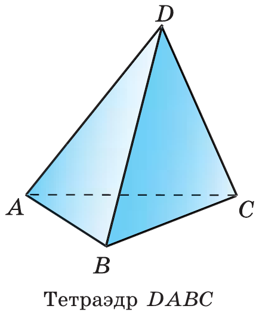
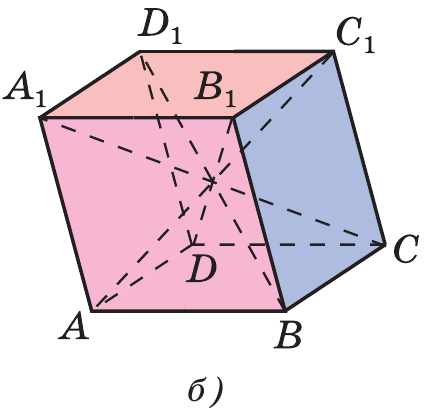
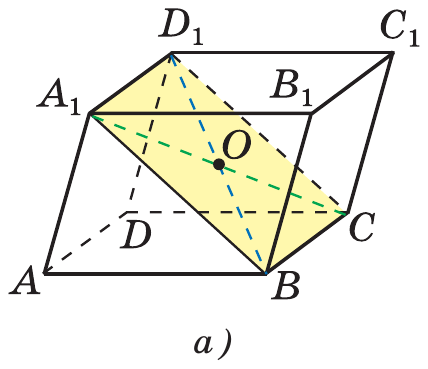
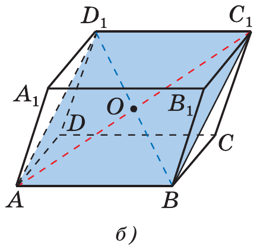
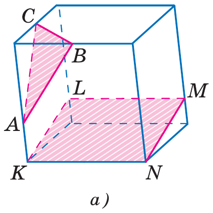
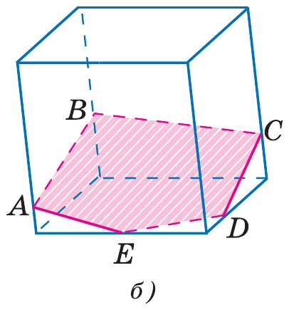
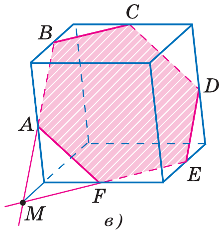
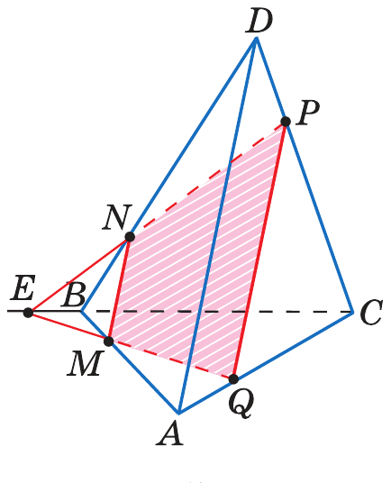
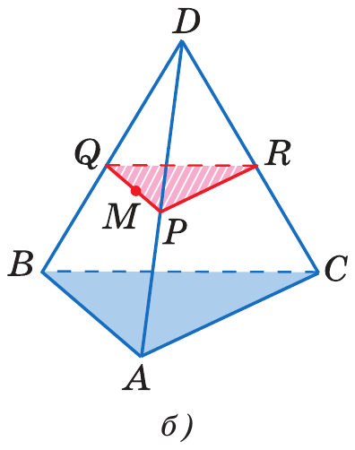

Два тела и главный навык главы
Треугольник ABC и точка D вне его плоскости. Соединяем D с вершинами.
Противоположные рёбра — без общих вершин: AD и BC, BD и AC, CD и AB.

Два равных параллелограмма в параллельных плоскостях, боковые рёбра параллельны.
Диагональ параллелепипеда — сквозь тело: AC₁, BD₁, CA₁, DB₁.

Параллельность — по признаку из урока 4.

Каждые две диагонали — диагонали параллелограмма.

Главный навык главы · задание 14 ЕГЭ
| Тело | Граней | Сечения |
|---|---|---|
| Тетраэдр | 4 | треугольник, четырёхугольник |
| Параллелепипед | 6 | от треугольника до шестиугольника |




